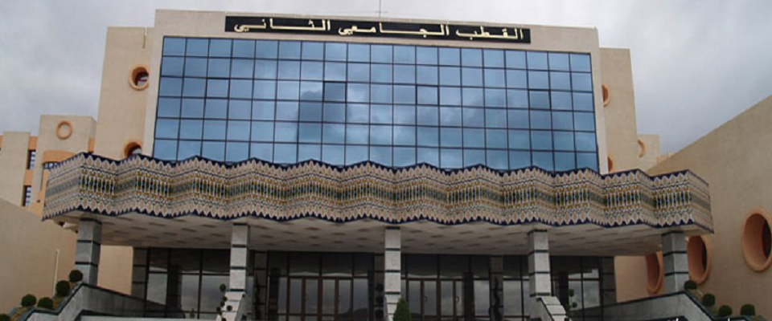
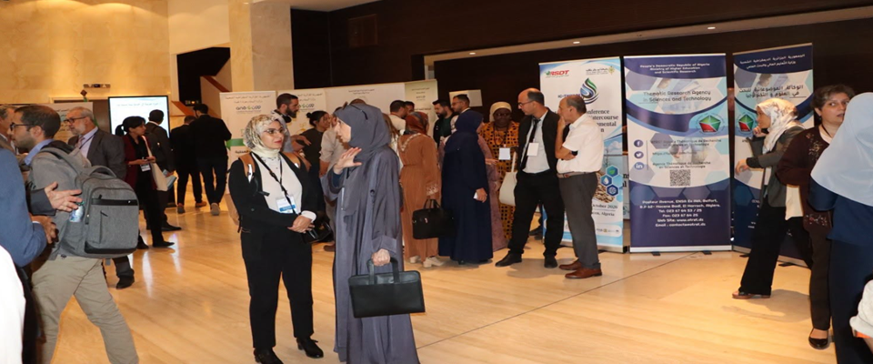
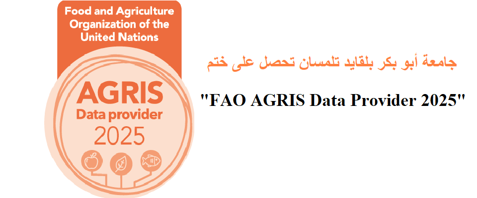
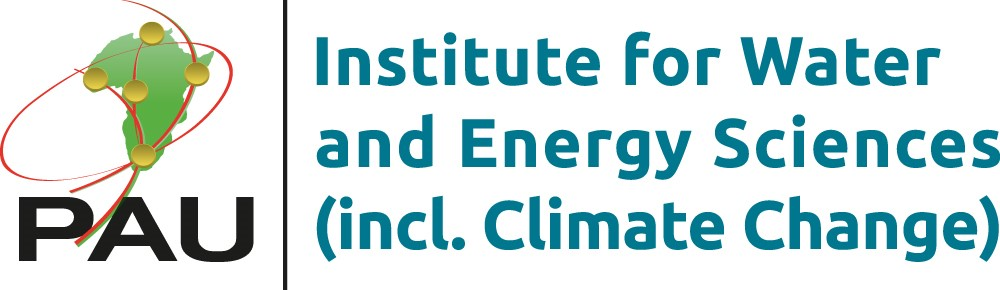
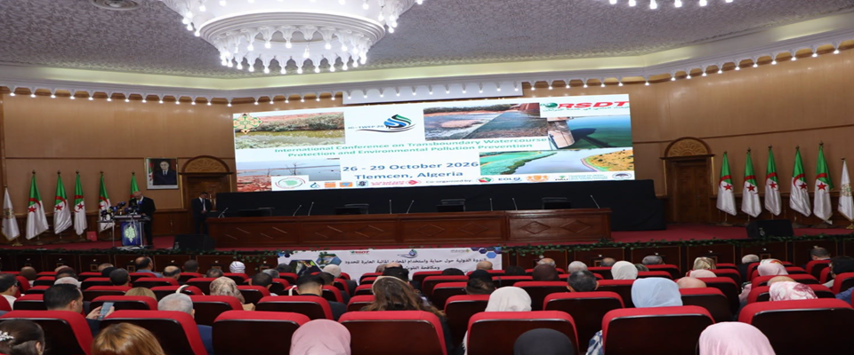
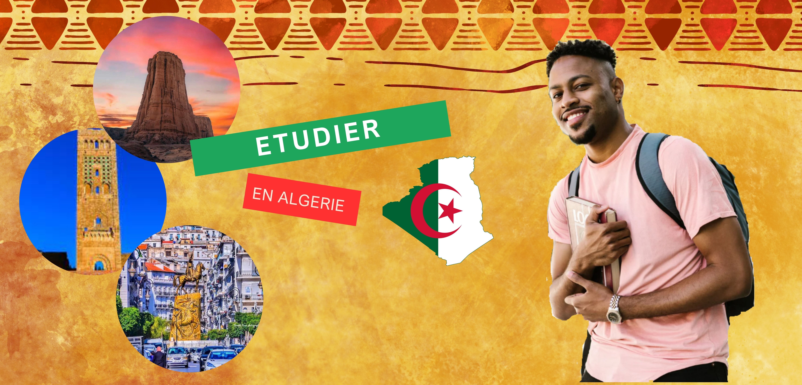

Le savoir, au cœur de Tlemcen.
Huit facultés et un institut, cinq pôles universitaires et des formations de la licence au doctorat, dans l'une des villes les plus riches d'histoire du Maghreb.

Un demi-siècle de savoir à Tlemcen.
L'Université Abou Bekr Belkaïd est le fruit d'une longue évolution, d'un centre universitaire aux premiers troncs communs jusqu'à une université complète, ouverte à de nouveaux défis.
- 1974Le centre universitaire
Les premiers enseignements, avec les troncs communs de sciences exactes et de biologie.
- 1984Les instituts nationaux
La nouvelle carte universitaire crée des instituts et ouvre de nouvelles filières, puis la post-graduation.
- 1989Naissance de l'université
Décret n° 89-138 du 1er août 1989, modifié en 1995 et en 1998.
- Auj.Huit facultés et un institut
Répartis sur cinq pôles universitaires, avec une annexe à Maghnia.
Le parcours LMD.
Licence, Master, Doctorat : un cursus progressif, de l'obtention du baccalauréat jusqu'à la recherche. Sélectionnez une étape.
Choisissez votre voie.
La vie de l'université.
Conférences, journées portes ouvertes, colloques et avis : l'actualité de nos facultés et laboratoires.
Des laboratoires tournés vers demain.
Équipes de recherche, conférences internationales et accès libre aux publications : la recherche à Tlemcen s'ouvre au monde.

FAO AGRIS Data Provider 2025Un sceau de la FAO qui reconnaît le rôle de l'université dans le partage de la connaissance agricole.
Programme PAUWESL'Institut de l'Université panafricaine pour les sciences de l'eau et de l'énergie, y compris le changement climatique.
Conférence IC-TWEP 2026Une conférence internationale sur la protection des cours d'eau transfrontaliers.Une ville d'histoire, un cadre pour apprendre.
Patrimoine architectural, culture vivante, médina et Grande Mosquée : Tlemcen offre aux étudiants algériens et internationaux un environnement où l'histoire et le savoir se rencontrent.
- Programmes de licence, master et doctorat
- Accueil des étudiants internationaux
- Résidences universitaires et activités sportives
